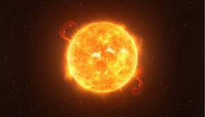
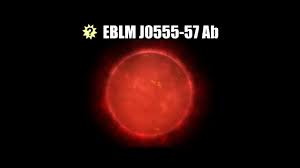

Antes de adentrarmos na história, vamos ver o significado de astronomia: "A Astronomia é uma ciência natural que se ocupa basicamente em estudar os fenômenos que ocorrem fora da atmosfera terrestre e a estrutura dos corpos celestes, como os planetas, as estrelas e outras estruturas cosmológicas (cometas, galáxias e nebulosas, por exemplo), e o próprio espaço em si. A palavra Astronomia vem do grego Astron, que significa astro, e Nomos, que significa lei."
Muitas civilizações antigas tratavam os astros como divindades. O estudo dos movimentos dos planetas e estrelas permitia aos povos antigos a distinção entre épocas de plantio e colheita, por exemplo. Algumas culturas antigas, como os maias, os chineses, os egípcios e os babilônios, foram capazes de elaborar complexos calendários baseados no movimento do Sol e outros astros.
Os gregos antigos também contribuíram muito para o avanço da Astronomia. Muitos filósofos gregos elaboraram modelos com o intuito de explicar o formato da Terra, as estações do ano, bem como os movimentos do Sol, da Lua e dos outros planetas visíveis a olho nu.
A Astronomia é uma área do conhecimento bastante ampla e com várias subdivisões. Entre elas, podemos destacar:
Qual o maior astro?
VY Canis Majoris
É a estrela VY Canis Majoris, com cerca de 2,7 bilhões de km de diâmetro, ou seja, mais de 3 milhões de vezes maior do que o Sol.

Qual o menor astro?
Cientistas encontraram a EBLM J0555–57Ab, a menor estrela já descoberta. Ela é um pouquinho maior que Saturno e está a aproximadamente 600 anos-luz da Terra. A “estrelinha” está situada em um sistema binário, no qual orbita uma muito maior. Para os especialistas, seu tamanho prova quão pequenos esses astros podem ser.
